KeitetsuWorks
トップページ
BLOG
鉄道模型
電子工作
雑記
KeitetsuWorks
トップページ
BLOG
鉄道模型
電子工作
雑記
鉄道写真
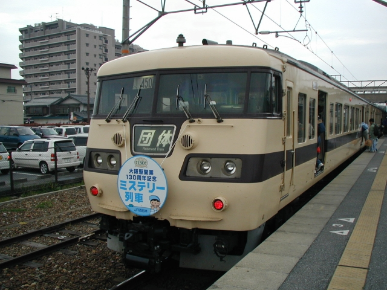
JR西日本 (1)
2004/05/02: 大阪駅開業130周年記念ミステリー列車
2004/05/03: 急行「但馬」リバイバル運転
写真を見る
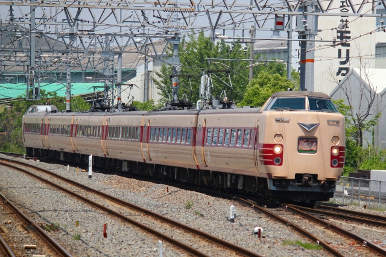
JR西日本 (2)
2010/02/07: 東福寺跨線橋付近
2010/05/15: 鴫野 - 放出
2010/05/22: 久宝寺駅
写真を見る
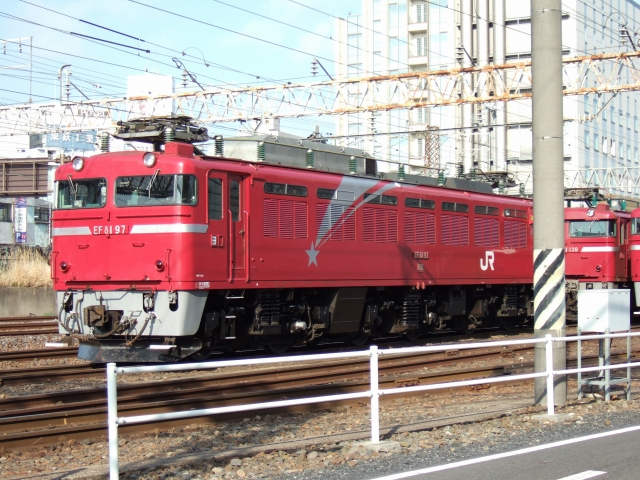
JR東日本
2008/03/15-16: 上野駅，水戸駅周辺
写真を見る
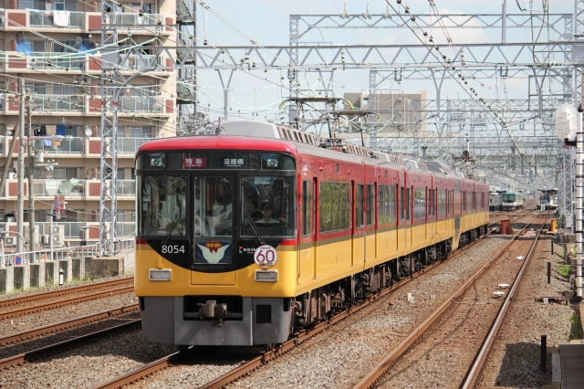
京阪電気鉄道
2004/03/14: 京阪淀屋橋地下延長線開通40周年記念
2007/04/05: 土居駅
2009/04/06: 土居駅
2009/07/07: 七夕伝説2009
2010/05/09: 京阪開業100周年記念
2010/07/01: 七夕伝説2010
2010/08/29: 京阪ミュージアムトレイン
2010/09/06, 27: 京阪特急60周年記念
写真を見る
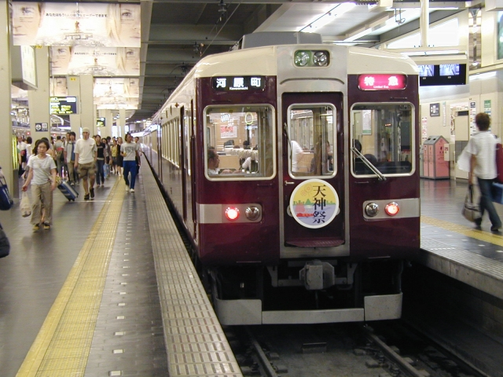
阪急電鉄
2005/07/18: 「天神祭」ヘッドマーク
2006/04/01: 「さくら」ヘッドマーク
2009/01/02: 「初詣」ヘッドマーク，「エコトレイン 未来のゆめ・まち号」 ，箕面線
2010/03/24: 「開業100周年」ヘッドマーク，「さくら」ヘッドマーク，「摂津市駅開業」ヘッドマーク
写真を見る
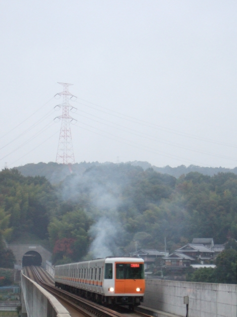
近畿日本鉄道
2010/11/13: 学研北生駒駅
写真を見る
雑記一覧（鉄道関係）
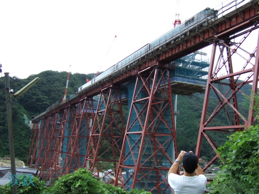
餘部橋梁視察
2009年8月末，現役引退が迫っていた「餘部鉄橋」を見に行きました． 本稿は3ページ構成となっています．
1ページ
2ページ
3ページ
記事を読む
雑記一覧（PC関係）
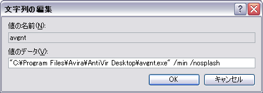
AntiVirの小技
AntiVirをより快適に使用するための便利な小技を紹介！
記事を読む
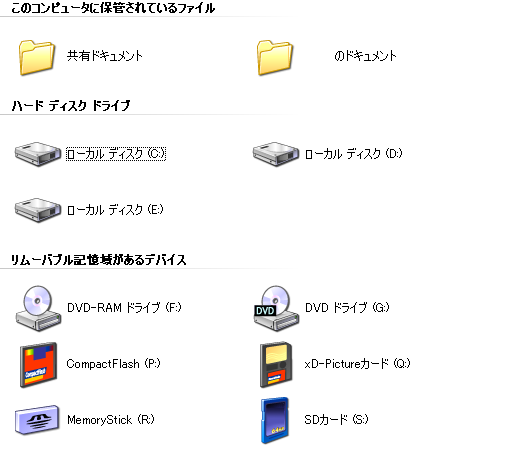
カードリーダのアイコンをカスタマイズ
カードリーダのドライブ名とアイコンを変更する方法を紹介！
記事を読む
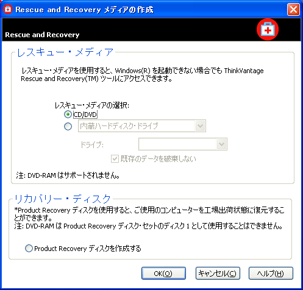
ThinkPadのリカバリディスクを作成する
ThinkPadのリカバリディスクを作成する方法を紹介！
記事を読む
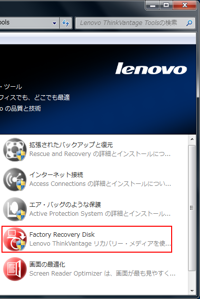
ThinkPad X121eのリカバリディスクを作成する
ThinkPad X121eのリカバリディスクを作成する方法を紹介！
記事を読む
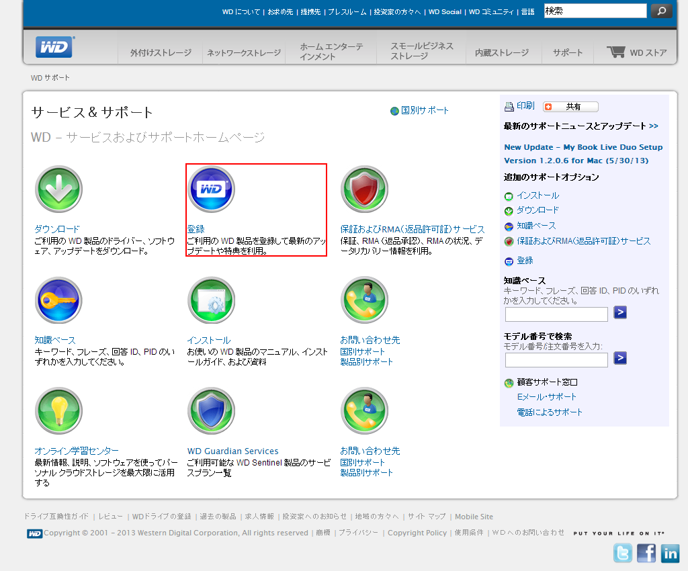
Western Digital (WD)製品のユーザ登録
Western Digital (WD)製品のユーザ登録を解説します．
記事を読む
雑記一覧（その他）
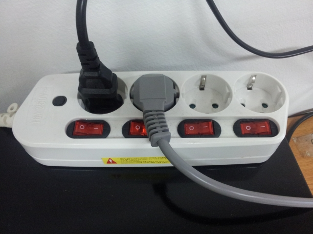
韓国のコンセント形状
韓国に渡航される際の参考にどうぞ．
記事を読む